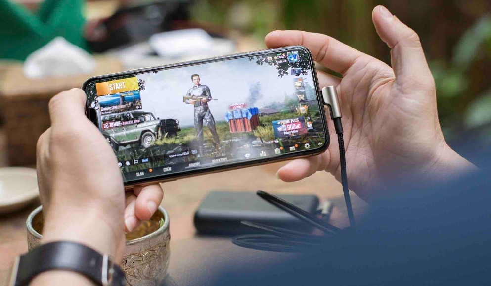
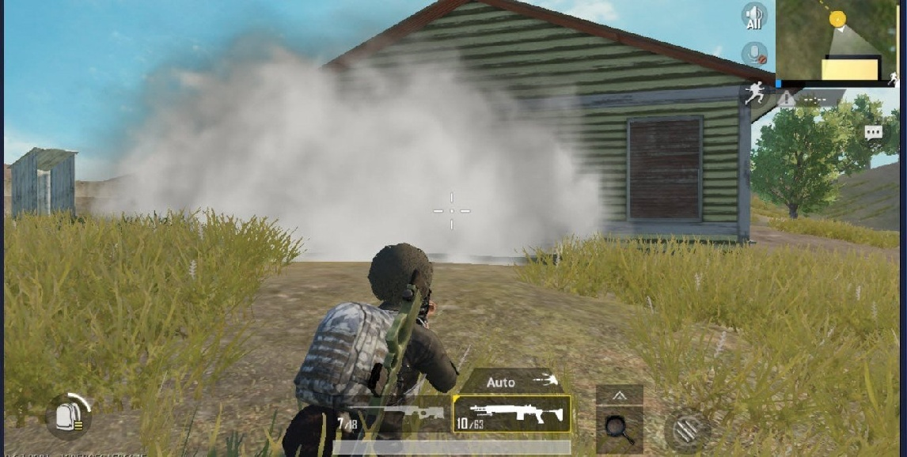
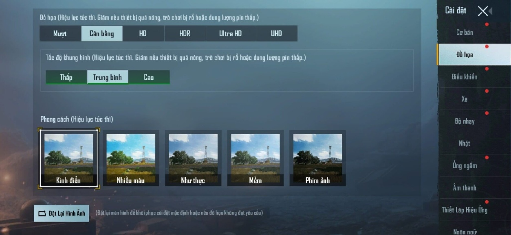
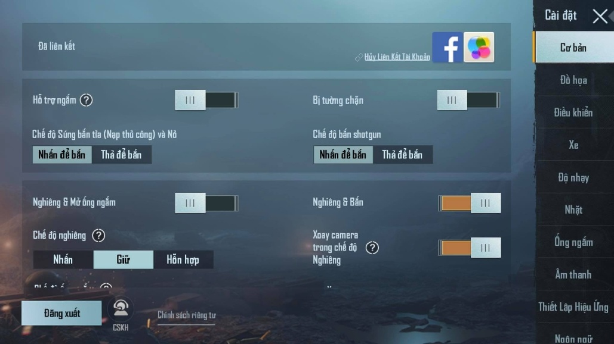
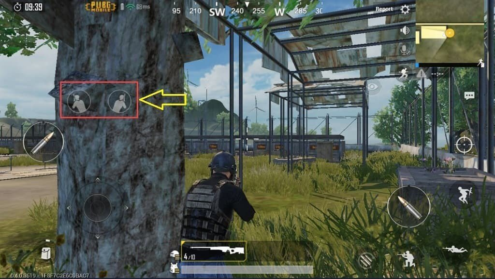
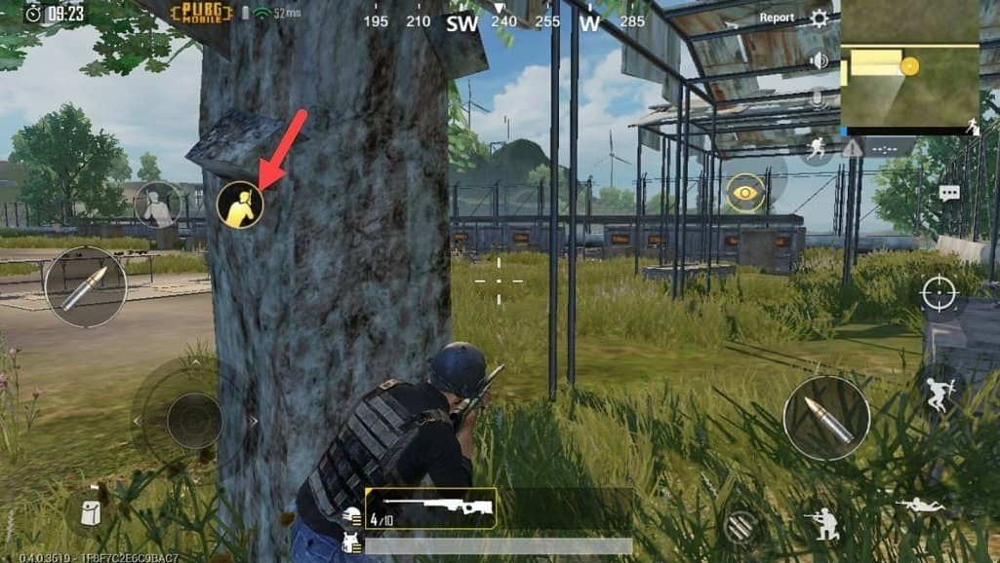
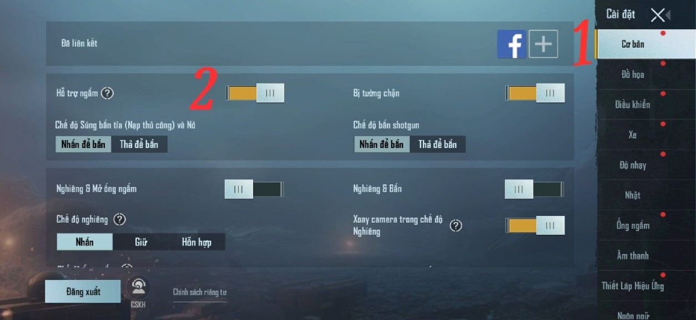
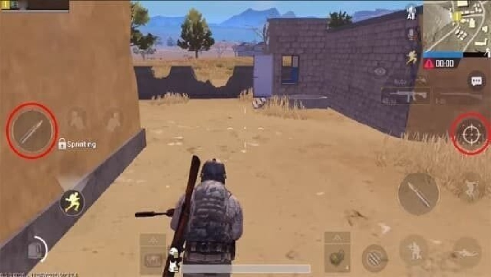
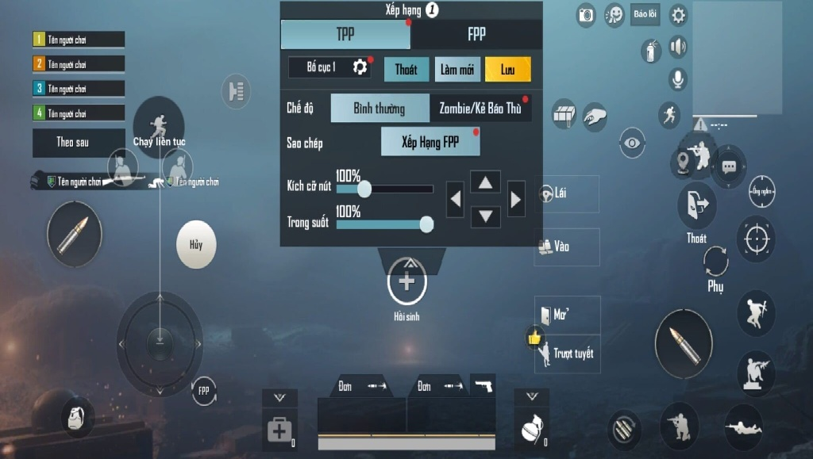
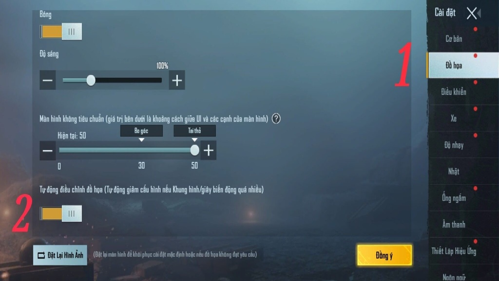

Trước khi tham gia vào một trò chơi, có một vài cài đặt bạn nên kiểm tra kỹ và điều chỉnh để có được hiệu suất tốt hơn và để dễ dàng tiếp cận game hơn.
rước khi bắt đầu trò chơi, bạn có thể nhấn vào nút chế độ trò chơi ngay bên dưới Bắt đầu (Start) và tùy chọn TPP (góc nhìn thứ ba – cái này mặc định trong game) hoặc FPP (góc nhìn thứ nhất).
Nếu bạn muốn game đó gay cấn hơn, chân thực hơn thì chọn FPP (góc nhìn thứ nhất), với những game thủ try-hard thì thường chọn chế độ này để tăng độ khó. Trên PUBG PC thì nhấn v để chuyển trong game được, bản mobile thì phải chỉnh trước trận đấu.
Loot đồ lái xe TPP cho đỡ chóng mặt, còn bắn nhau bật FPP lên bắn có cảm giác thực hơn.
PUBG Mobile sẽ tự điều chỉnh đồ họa game tùy theo cấu hình máy. Nhưng nếu bạn cảm thấy khi bắn bị lag thì có thể hạ đồ họa xuống thấp hơn.
Kinh nghiệm khoảng giữa game là mình chỉnh xuống chất lượng thấp hơn để tia cho dễ. Cài đặt đồ họa cao hơn chắc chắn sẽ giúp bạn dễ dàng phát hiện kẻ địch hơn, tuy nhiên với máy cấu hình yếu bạn nên hy sinh để giữ khung hình ổn định.
Khi bạn chỉnh setting PUBG Mobile, tính năng Nghiêng & Bắn thường mặc định là tắt nhưng nó rất hữu ích khi bạn đang:
Vào Cài đặt >> trong mục Cơ bản các bạn gạt thanh Nghiêng & Bắn qua bên phải là đã kích hoạt thành công. Như ảnh dưới:
Nếu bạn chưa hình dung như thế nào thì xem 2 ví dụ sau là biết:
Sau khi bật tính năng Ngắm & Bắn giờ đây nấp sau cây cối hoặc tường rào sẽ có biểu tượng cho phép bạn nghiêng sang trái hay phải.
Ok, khi nhấn vào bạn sẽ thấy dáng đứng của chiến sĩ trong hình cũng nghiêng để dễ dàng quan sát hơn:
 Lưu ý quan trọng: hãy nhớ rằng bạn sẽ vẫn để lộ đầu của mình, vì vậy hãy thận trọng nhé.Ngày nay, hầu hết smartphone đều tích hợp con quay hồi chuyển cho phép đo chuyển động quay và lệch. Setting PUBG Mobile tận dụng con quay hồi chuyển để phân tích và đánh giá chuyển động của người chơi 1 cách chính xác. Bằng cách bật tính năng cảm biến con quay, PUBG Mobile cho phép bạn nghiêng điện thoại lên xuống thay vì phải chạm và kéo trên màn hình để thay đổi góc nhìn từ đó giúp bạn xử lý nhanh hơn, chính xác hơn và đôi khi cảm giác bắn thật hơn.
Kiểm tra xem tính năng hỗ trợ ngắm có được bật để ngắm dễ dàng hơn không? Tính năng hỗ trợ ngắm là cài đặt bắt buộc phải bật trên điện thoại màn hình cảm ứng vì ngắm bắn bằng màn hình cảm ứng không có độ chính xác như ngắm bắn bằng chuột. Điều này sẽ giúp bạn hạ gục kẻ thù nhanh hơn và cũng sẽ giúp trong các cuộc đấu súng gần.
Việc sử dụng scope (ống ngắm) trong game là việc khá thường xuyên. Trong Cài đặt -> Cơ bản, kích hoạt tính năng Ngắm bắn bên trái để dễ dàng bắn bằng tay trái trong khi nhắm bằng bên phải. Điều này rất tiện dụng khi bạn dùng scope.
Truy cập Cài đặt -> Cơ bản -> Tự động mở cửa để nhanh chóng vào bên trong các tòa nhà mà không cần phải nhấn nút cửa liên tục. Lưu ý rằng bạn phải nhấn để đóng cửa.
Vào Cài đặt -> Điều khiển -> Tùy chỉnh để thay đổi kích thước và vị trí của các nút điều khiển game theo ý bạn.
Trong Cài đặt -> Đồ họa, bạn cũng có thể bật chế độ tự động điều chỉnh đồ họa để đảm bảo tốc độ khung hình ổn định trong khi chơi.
Dễ hiểu hơn là nếu điện thoại của bạn bắt đầu quá nóng hoặc nếu pin yếu, setting PUBG Mobile sẽ tự động điều chỉnh chất lượng đồ họa để bù lại bằng cách giảm độ họa xuống mức thấp chẳng hạn.